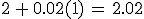

Cálculo diferencial
Un modelo matemático es una expresión que relaciona dos o más variables.
Para lograr un modelo es necesario, según Polya
- Comprender el problema el cual consiste en determinar: ¿Cuál es la incógnita? ¿Cuáles son los datos?
- Concebir un plan: ¿He resuelto un problema semejante?¿O ha visto el mismo problema planteado en forma diferente? ¿Tiene información que le puede servir?
- Ejecución del plan: ¿Puede ver claramente que el paso es correcto? ¿puede demostrarlo?
- Comprobación: ¿Puede verificar el resultado?¿puede obtener el resultado en forma diferente?
Ejemplo 1
El perímetro de un rectángulo es de 26 unidades, expresa el área del rectángulo en función de su largo.
Solución:
¿De que datos disponemos?: un rectángulo y su perímetro de 26 unidades
¿Qué solicita el problema? Expresar el área en función de su largo.
Del rectángulo que se refiere el problema no se conoce su largo ni su altura, tomemos a como la altura y a como el largo, realice un dibujo que represente el rectángulo y utilice letras que indique la longitud de la base y la altura, como se muestra a continuación:
El perímetro del rectángulo es 26 unidades entonces:
El problema solicita que expresemos el área como una función del largo, entonces despejemos a ya que es el largo:
Recordemos que el área de rectángulo se obtiene multiplicando la base por la altura:
Pero recordemos que hemos despejado , es decir el largo, entonces sustituyamos el largo en el área:
Y terminamos, hemos expresado el área como función del largo del rectángulo.
Ejemplo 2
Una persona tiene una pared de piedra en un costado de un terreno. Dispone de 1 600 m de material para cercar y
desea hacer un corral rectangular utilizando el muro como uno de sus lados. Expresa el área del corral en función
del ancho de éste.
Solución:
Datos:
- Se cuenta con 1600 m de material
- El corral que se desea construir tiene forma rectangular
- Uno de los lados del corral será el muro.
- Problema: expresar el área del corral en función del ancho del corral.
No se conoce el ancho ni el largo del corral, designemos por y realice un dibujo con los datos proporcionados:
El corral a construir sólo contará con tres lados ya que el otro de los lados es el muro de piedra, entonces el perímetro del corral es:
El problema solicita que expresemos el área del corral como una función del ancho del corral, entonces del perímetro anterior despejemos a para que quede solo en términos de :
El área del rectángulo se obtiene multiplicando el largo por el ancho, pero el largo es , entonces el área es:
Sustituyamos para expresar el área en función del ancho, es decir en términos de ya que es el ancho del corral

Hemos expresado en área del corral en función del ancho del corral.
Ejemplo 3 Multas por exceso de velocidad
En cierto estado la velocidad máxima permitida en las autopistas es y la mínima es 40. La multa  por violar estos límites es $15 por cada milla arriba del máximo o abajo del mínimo.
por violar estos límites es $15 por cada milla arriba del máximo o abajo del mínimo.
- Escriba el modelo que represente la multa en función de , donde es la velocidad a la que conduce una persona.
- Determine la multa si la persona conduce a , y
Datos:
- La velocidad mínima es
- La velocidad máxima es
- Si una persona conduce a una velocidad por encima del máximo o por debajo del mínimo entonces pagan $15 por cada milla
Solución:
Note que si una persona conduce hay tres posibilidades: que la persona conduzca por debajo del mínimo; que la persona conduzca a una velocidad que está entre el mínimo y el máximo o que la persona conduzca a velocidad por encima de la máxima velocidad.
Notará que si la persona conduce por debajo del mínimo o por encima del máximo, entonces hay una multa de $15 por cada milla.
Obtenga algunos valores de multa para varios velocidades y trate de determinar la regla o función que genera:
- Si la persona conduce a
 note que la velocidad está por debajo del mínimo, entonces la multa será:
note que la velocidad está por debajo del mínimo, entonces la multa será: - Si la persona conduce a entonces la multa será de

Note que en esta dos multas la velocidad está por debajo de la velocidad mínima entonces la multa será
Observemos otro caso cuando la persona conduce a una velocidad entre la mínima y máxima velocidad
- Si la persona conduce a una velocidad de entonces la multa es de 0
- Si la persona conduce a una velocidad de entonces la multa es de 0
En general si la persona conduce cuya velocidad está entre la multa es de $0
El otro caso es cuando la persona conduce a una velocidad que está por encima de la máxima velocidad por ejemplo a una velocidad de entonces la multa es , en general cuando la velocidad está por encima de la máxima velocidad la multa es
El modelo que representa la multa es:
Ejemplo 4
Una compañía de taxis cobra $2.00 por la primera milla (o parte de una milla) y 20 centavos por cada milla recorrida. Exprese el costo  (en dólares) de un viaje como una función de la distancia recorrida (en millas)
(en dólares) de un viaje como una función de la distancia recorrida (en millas)
Solución:
Recuerde que un centavo es lo mismo a tener: 0.01, dos centavos equivale 0.02, cincuenta centavos equivale a 0.5, veinte centavos equivale a 0.2, ....
Siga el siguiente razonamiento:
- Si un usuario contrata el servicio y aun no ha recorrido ninguna milla entonces el costo es es $2
- Si recorre una milla el costo será de $2 +0.02(por una milla que ha recorrido), es decir, 
- Si recorre dos millas el costo será de $2+0.02(por dos millas que ha recorrido) o sea:
Notará que el costo sólo va variando las millas que el usuario recorre, entonces designe a como las millas recorridas y el costo por recorrer esa distancia, entonces el costo es:
otro más
Un globo esférico está siendo inflado. El radio del globo crece a la velocidad de
- Encuentre una expresión que modele el radio como una función del tiempo
- Encuentre una función que modele el volumen como una función del radio.
Solución:
- Siga el siguiente razonamiento: el radio del globo crece conforme trascurre los segundos, al primer segundo el radio es de , a los dos segundos el radio es de , a los tres segundos el radio es de note que por cada segundo que transcurre el radio aumenta una unidad entonces la expresión que modela el radio como una función del tiempo es:
2. EL volumen de una esfera se obtiene de la siguiente forma: en el problema el radio es una función del tiempo y en la expresión del volumen todos los números son constantes, entonces el volumen también dependerá del tiempo por tanto el volumen del globo es:
Licencia: licencia propietaria intelectual